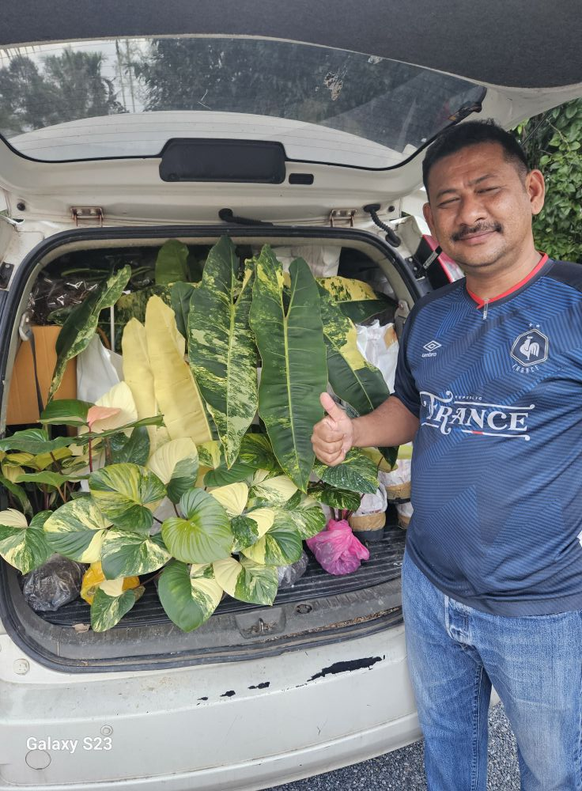

I am a business owner, agriculture contributor and also serve as a Special Officer under the Perlis State EXCO for Infrastructure, Transport, and Border Relations and Cooperation. I have been in the business for 15 years and have a passion for plants and gardening. I am dedicated to providing quality products and services to my customers and contributing to the agriculture industry in my community. For over 15 years, I have dedicated my work to growing organic plants and building a business that supports both customers and the local community.
My passion for plants and agriculture started from a young age, and today it continues to grow through my nursery and cafe. I believe in providing quality products, sharing knowledge, and helping others appreciate the beauty of nature.
I'm working as a Manager at Anboon Enterprise and has 15 years of working experience. My daily routine includes watering, planting, and growing plants.Through my work, I aim to contribute to agriculture and agro-tourism in Perlis while creating opportunities for the local community and inspiring others to start their own journey.
